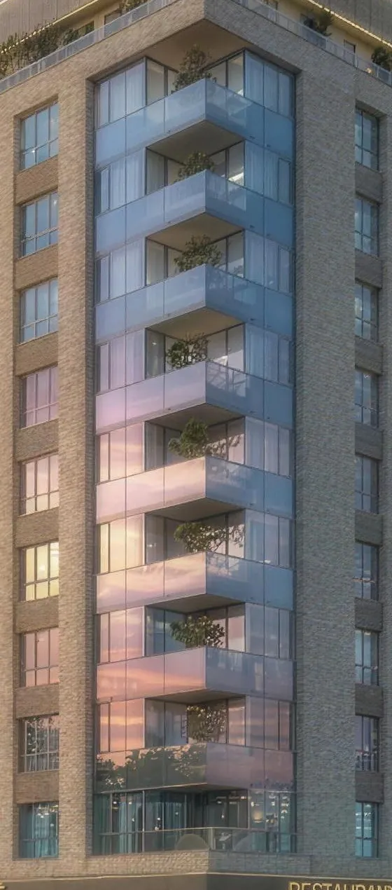
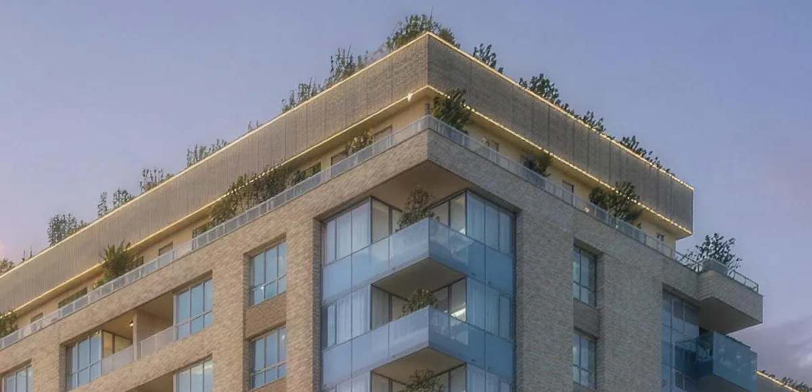
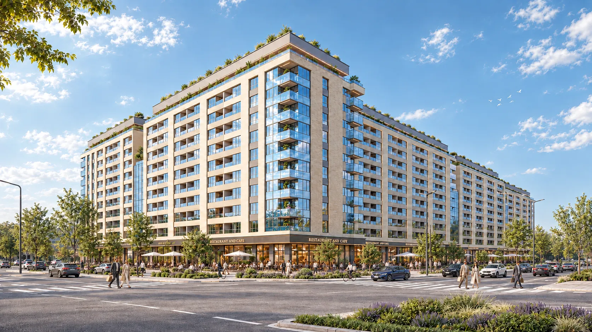
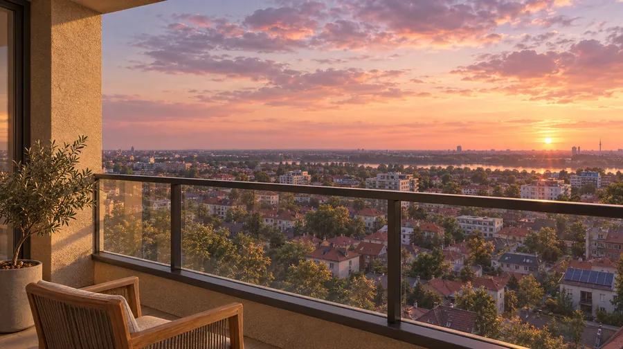

Blue Danube Promenade · Земун, Белград
Ваш город в городе.
Восемь секций вокруг общего двора. Дома, коммерческие помещения и променад — в одном месте.
Когда наступает вечер
Окна загораются одно за другим. За каждым — чей-то дом и своя история.
Утро
Утро начинается дома — с завтрака и солнца в большом окне.
День
Кофе, покупки и дела — на первом этаже, в паре шагов от двери.
Планируемые коммерческие помещения на первом этаже комплекса.
Вечер
Вечер во дворе и на променаде, с друзьями.
Blue Danube Promenade
Всё это — по одному адресу.
Восемь секций, общий двор и коммерческие помещения на первом этаже.
В фокусе продажСекции 5 и 6 · Квартиры до 40 м²
Смотреть квартиры- Утро
- День
- Вечер
Визуализация на основе 3D-модели
Пропустить вступление
01 Квартал
Весь квартал с любой стороны
Восемь секций сомкнуты в закрытый городской квартал вокруг общего двора — на краю района Алтина в Земуне.
Комплекс стоит на окраине района Алтина в общине Земун. Его окружают магистраль Т6, автотрасса Белград – Нови-Сад и улицы С126 и С133 — Ратарски пут.
Рядом расположен Региональный почтовый центр Почты Сербии.
Внутренний двор — полуприватный, прежде всего для жителей.
Попасть в него можно через три пешеходных пассажа на уровне первого этажа — между секциями 1–2, 2–3 и 7–8.
93 коммерческих помещения на первом этаже секций и в пристроенном анексе.
Помещения для торговли и услуг выходят на окружающие улицы и во двор, не нарушая тишину внутренней пешеходной зоны.
- 1 291квартира, 33–158 м²
- 93коммерческих помещения
- 1 605машино-мест
- 40,4 %участка — свободные и зелёные площади
Модель из FBX с частью исходных текстур; материалы и освещение адаптированы к браузеру, обозначения секций, двора и первого этажа приблизительные. Схема окружения ориентировочная. Спутниковый снимок: Esri, Maxar, Earthstar Geographics. Соседние здания: © участники OpenStreetMap, высота условная.
02 Архитектура
П + 9 + ПС
Первый этаж, девять этажей и отступающий верхний этаж. Под зданием — четыре подземных уровня.
- Высота венца
- ≈ 31 м
- Максимальная высота
- 36,5 м
- Типовой этаж, от пола до пола
- 2,90 м
Чистая форма без свесов, плоские кровли. Фасады — декоративная штукатурка нескольких оттенков, чёрный металл и стекло; лоджии врезаны в фасад и венцы. Торцы секций решены как полноценный фасад, с проёмами.




03 Первый этаж
93 коммерческих помещения
Помещения для торговли и услуг выходят на окружающие улицы и во двор, не нарушая тишину внутренней пешеходной зоны. На визуализации — рестораны и кафе.
Визуализации предварительные; вечерняя и дневная версии отличаются ракурсом.
04 Двор
Двор внутри квартала — для прогулок и отдыха

Мощёные площадки у входов в секции соединены пологими пешеходными дорожками. Между секциями — зелёные зоны с разной степенью приватности.
В мощении — кирпич и каменные плиты, в благоустройстве — чёрные металлические кашпо и деревянные скамейки. Свободные и зелёные площади занимают 40,4 % участка.


Дневные зоны квартир выходят на лоджии или террасы.
Вид из конкретной квартиры зависит от секции и этажа — уточняется.
05 Подбор квартир
Квартиры до 40 м² в секциях 5 и 6
В фокусе продаж — секции 5 и 6. Мы отобрали 18 квартир до 40 м² с 1-го по 10-й этаж; для каждой доступен исходный лист с планировкой.
18 квартир
По выбранным фильтрам квартир нет
Измените секцию, этаж, площадь или ориентацию — или сбросьте все фильтры.
- Цены
- уточняются
- Статус квартир
- будет опубликован позже
- Сроки
- уточняются
Показаны квартиры до 40 м² в секциях 5 и 6 (секция 5: 1–9-й этажи, секция 6: 2–10-й этажи). Этаж, площади и ориентация взяты с исходных листов; фрагменты планировок вырезаны из тех же листов, без изменения чертежа.
06 Заявка
Получить презентацию
Оставьте контакты — пришлём материалы о проекте, как только они будут готовы, и ответим на вопросы.
Заявка принята
Демо-режим: форма не подключена к CRM, данные никуда не отправлены.